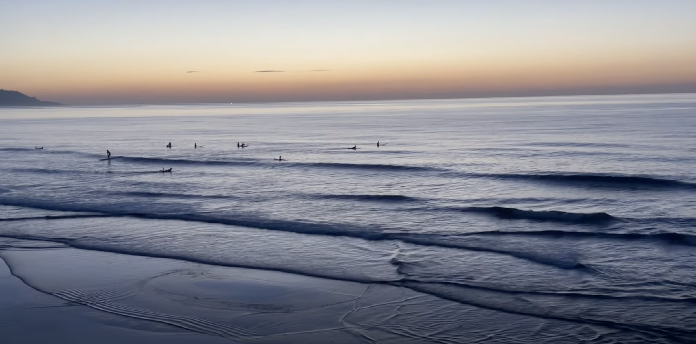

浪點介紹、安全知識、裝備筆記，之後新增文章就是在這頁加卡片。

沙灘與礁岩混合地形，適合初學者練習，但防波堤北側礁岩區要特別留意退流時機。
沙灘地形、浪高別超過 1.2m、離岸流少——三個挑浪點原則，附北中南各一個新手友善浪點。
浪高只是海況的一部分，陸風／onshore、潮汐、離岸流一起看，才不會被表面的平靜騙了。
混濁的水色、沒有白沫的水面、垂直於岸的小波紋——學會看這三個徵兆，比什麼都重要。
礁岩型浪點，浪況佳但地形變化快，建議有經驗者優先，並抓緊滿潮前兩小時的空檔。
冬天東北季風浪點水溫直落 18 度，厚度怎麼挑、袖長要不要留，實際下水比較給你看。
示範文章，內容待補：外澳浪點特色、風向與離岸流位置整理。
示範文章，內容待補：不同尾鰭配置對操控性與速度的影響。
示範文章，內容待補：潮汐表基礎判讀與各浪點的黃金窗口對照。
示範文章，內容待補：南灣夏季浪況、人潮尖峰時段與水母出沒提醒。
示範文章，內容待補：划水常見錯誤姿勢與修正方式圖解。
示範文章，內容待補：板具日常保養與簡易修補教學。